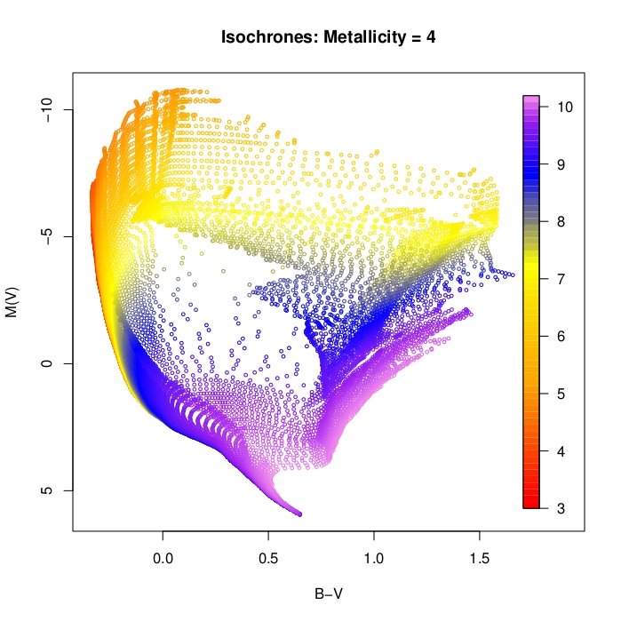
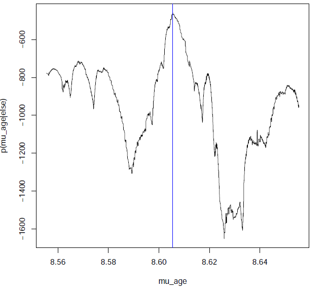
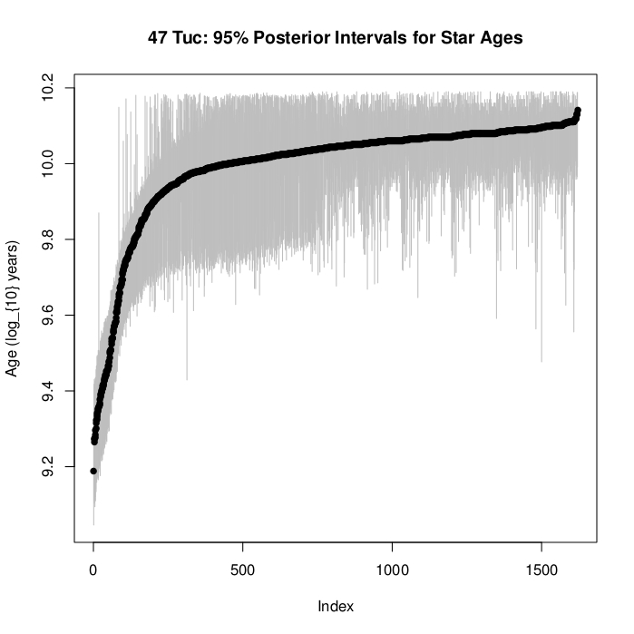
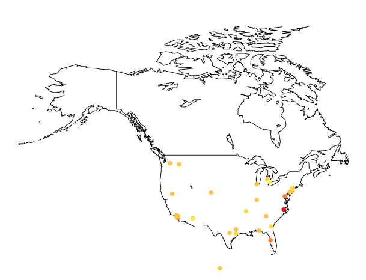

Welcome to STA 250!
On the menu for today...
Course logistics
About (me|you)
Appetizers
Paul D. Baines
On the menu for today...
Course logistics
About (me|you)
Appetizers
Website: https://piazza.com/ucdavis/fall2013/sta250
Office Hours: Mon: 3:10-4:00pm (MSB 4105), Fri: 12:00-1:00pm (MSB 4105)
From the syllabus:
The course is designed to equip students with the basic skills required to tackle challenging problems at the forefront of modern statistical applications. For statistics PhD students, there are many rich research topics in these areas. For masters students, and PhD students from other fields, the course is intended to cultivate practical skills that are required of the modern statistician/data scientst, and can be used in your own field of research or future career.
The course is intended to be practical in nature. You will hopefully learn skills that will be useful outside of the course (be it in your own research or future work).
The modern (statistician|data scientist|person who analyzes data) needs to possess many
different skills. This course also requires many different skills. You will do tasks
requiring some knowledge of statistical theory, programming skills, data analysis skills,
as well as some intuition and problem-solving skills.
Efficient Bayesian computation
Statistical applciations in astrostatistics
Statistical computing using GPUs
Other random stuff: I'm English, I love dogs, I love coffee, I run, I code.
Thanks for completing the pre-course survey (those who did :)
Now for some of the results...
foo <- table(pcs[, 2])
data.frame(Field = names(foo), Number = as.numeric(foo))
## Field Number
## 1 Applied Mathematics 1
## 2 Biomedical Department 1
## 3 Biomedical Engineering 1
## 4 Biostatistics 6
## 5 Computer Science 2
## 6 Economics 1
## 7 Mathematics 1
## 8 PhD student in Population Biology and MS student in Statistics 1
## 9 Political science 1
## 10 Statistics 21
table(pcs[, 3])
##
## Masters PhD
## 8 28
count_responses(pcs[, 4], cats = courses)
## STA 108 STA 131A STA 131BC STA 135 STA 137 STA 231ABC
## 28 28 24 18 18 16
## STA 106 STA 141 STA 243 STA 242 STA 145
## 15 14 6 3 2
count_responses(pcs[, 5], cats = topics)
## Maximum Likelihood Estimation Logistic Regression
## 34 22
## The Bootstrap Mixed Effects Models
## 21 20
## The EM Algorithm MCMC
## 19 17
## Time Series Analysis Bayesian Inference
## 17 13
## Random Forests
## 12
count_responses(pcs[, 6], cats = c("Linux", "Windows", "Mac OS X"))
## Windows Linux Mac OS X
## 34 16 10
table(pcs[, 7])
##
## I am an R guru! :) I am comfortable using R
## 3 23
## I have never used R before I have used R before, but not much
## 3 7
table(pcs[, 8])
##
## I am comfortable using Python
## 5
## I have never used Python before
## 22
## I have used Python before, but not much
## 9
count_responses(pcs[, 9], cats = compies)
## Latex Git
## 29 10
## Databases GitHub
## 10 9
## Gauss Amazon Cloud Computing Services
## 5 5
## Hadoop
## 0
count_responses(pcs[, 10], cats = langies, fixed = TRUE)
## C C++ Java SQL Javascript Fortran
## 27 20 16 11 6 3
## CUDA Julia OpenCL Scala
## 2 2 1 1
foo <- table(pcs[, 11])
data.frame(Topic = names(foo), Votes = as.numeric(foo))
## Topic Votes
## 1 Astronomy 2
## 2 big data 1
## 3 Biological data 1
## 4 Economics 1
## 5 Finance/Business 11
## 6 Genetics 7
## 7 Insurance, Medicine 1
## 8 Medical 1
## 9 Most Everything 1
## 10 not really sure yet, but none of the above stand out 1
## 11 signal processing 1
## 12 Social Media (e.g., Analyzing Twitter, Facebook activity) 5
## 13 Social science/media / neuroscience 1
## 14 Sports and Physical Sciences 1
## 15 Stochastic Optimization 1
count_responses(pcs[, 12], cats = respies)
## The course sounded really interesting/useful
## 33
## I am hoping that the course content will be helpful for my research
## 25
## I am hoping that the course content will be helpful for my future job prospects
## 22
## I needed more units and it seemed like the best available course
## 7
## I have to take the course to satisfy a requirement for my degree
## 6
## My advisor told me to take the course
## 6
table(pcs$Coffee.or.tea.)
##
## Both Coffee Neither Tea
## 13 5 2 16
table(pcs$Cats.or.dogs.)
##
## Both Cats Dogs Neither
## 6 9 11 10
xtabs(~Cats.or.dogs. + Coffee.or.tea., data = pcs)
## Coffee.or.tea.
## Cats.or.dogs. Both Coffee Neither Tea
## Both 2 0 0 4
## Cats 1 1 0 7
## Dogs 6 3 1 1
## Neither 4 1 1 4
In modern applications of statistical analysis it is common to need to model and understand highly complex processes.
Many complex processes can be decomposed into smaller, simpler, and more comprehensible pieces When combined: many simple relationships can form exceptionally complex systems
Bayesian modeling is ideal for such situations:
Lets see an example...
In many astrophysics problems it is of interest to understand the star formation process, or the age of astrophysical objects.
There are three main properties of a star that determine its brightness:
What we observe is the brightness of the star at different wavelengths.
A detector will typically record the brightness of the star as passed through three filters (e.g., UBV). So we have a measurement of the brightness of the star in U-, B- and V-bands.
How can we get from \((M,A,Z)\) to \((U,B,V)\)?
Fortunately, there are physical models that determine, given the mass, age and metallicity of a star, the expected brightness in each photometric band.
i.e., we have a function \(f:\mathbb{R}^{3}\mapsto\mathbb{R}^{3}\) such that:
\[ f(M,A,Z) = E[(U,B,V)] \]
In short, for each of \(n\) stars, we have noisy observations in the \((U,B,V)\)-space, and need to infer things about the \((M,A,Z)\) space:
\[ (U_i,B_i,V_i) | (M_i,A_i,Z_i) \sim f(M_i,A_i,Z_i) + \epsilon_i \]
for \(i=1,\ldots,n\). Unfortunately \(f\) has no closed form and is not invertible.
What does \(f\) look like? For fixed \(Z\), varying \((M,A)\) in the \((B-V,V)\) space we get:

In short: the mapping is highly degenerate.
Lots of different \((M,A,Z)\) combinations give the same value of \((B,V,I)\).
Are we doomed? Should we give up and go home?
What could rescue us...?
Fortunately we have two things in our favour:
Prior information: We often know from previous surveys or background knowledge roughly how old, or how massive, or what range of metallicities to expect for a given dataset.
Pooling of Information: Stars in a "cluster" are expected to be formed at a similar time, so we can pool information across stars.
Both things can be easily done by a Bayesian model...
Observations + Science:
\[ (U_i,B_i,V_i) | (M_i,A_i,Z_i) \sim f(M_i,A_i,Z_i) + \epsilon_i \]
Pooling: \[ A_i \sim N(\mu_a,\sigma_a^2) \]
Prior Information that specifies how old, and how much variability we would expect in the stellar ages:
\[ p(\mu_a,\sigma_a^2) \]
(Other model components for \((M_i,Z_i)\) etc. omitted for simplicity).

Solution: Fancy computational (MCMC) strategies.
For the 47-Tuc dataset (~1600 stars):

As illustrated by the astrophyics case study, Bayesian statistics:
Therefore: Module # 1. :)
What is "big" data?
Exabytes?
It depends what you are trying to do with it!
When dealing with data on the order of Gigabytes (or more) it becomes
infeasible to read it into R and proceed as we all did back in the
good old days.
How then do we deal with it?
Twitter averages 500 million tweets per day.
That is a huge amount of data about "people": how they think, how they interact, social patterns, economic trends etc.
Most of those tweets are lolcatz or complaints about too much foam in a cappuccino, but still, there is interesting information to be gleaned.
Twitter has an open API that allows developers to stream samples of tweets. It is essentially possible to obtain as much data you want (and it is easy to get it).
The other day, at around midnight PT (3am ET) I streamed a small sample of about 40Mb of tweets.
Lets do the now traditional "sentiment analysis".
Create a "dictionary" of words, and assign each word a "sentiment score". For example:
happy = 5 sad = -5 apathetic = -2 neutral = 0
Go through a tweet word-by-word, and add up the sentiment scores (or you could do a per-word average)
Words not in the dictionary are scored as zero (or omitted)
Also, lets record the geo-tagged location (if available) of each tweet
Lets see what we find...

Crude, but any thoughts? Discuss.
When datasets become truly huge, it becomes infeasible to store them on a single machine, and a fundamentally new approach to computing is needed (ensuring fault tolerance etc.).
That is where Hadoop comes in.
Originally developed at Yahoo!, Hadoop is a distributed file system (DFS) that can handle internet-scale datasets.
How to interact/program with Hadoop?
New programming models were developed, notably the Map-Reduce framework. Higher-level interfaces have now matured and are gaining popularity e.g., Hive and Pig.
We will dive in and play with this in Module #2.
For the "big data" module (and possibly for the final project), we will also dabble with cloud computing using the EC2 and ElasticMapReduce (EMR) components of AWS. EMR provides a Hadoop environment that takes care of much of the grunt-work necessary to use Hadoop+MapReduce.
A big thank you to Amazon for providing us with an educational grant to cover course expenses! :)

Any self-respecting statistician needs to know how to optimize a function.
We do this all the time, whether it be for estimation or prediction.
Knowing how to use optim is a great start, but it won't get you everywhere you need to go.
Really understanding optimization strategies can help you solve complex problems that others may struggle with.
In module 3: Optimization + The EM Algorithm, we take a look at look at optimization strategies, and an in-depth look at a very popular and useful one: The Expectation-Maximization Algorithm.
WARNING/NOTE: This will be the math-iest of the modules. ;)
Considering:
The strain on the computing capability of statistical procedures is immense. In this module we will look at some strategies to speed up statistical computation using parallelization.
Traditionally, most calculations performed by computers were done by the Central Processing Unit (CPU). CPUs can perform sequential calculations tremendously fast.
Caclucations required for computer graphics typically involve "massively parallel computation". For example, they run the same calculation independently for all pixels to produce an image. With the advent of graphics-heavy comuter games, specialist graphics cards (GPUs) were developed to conduct these graphics-related computations.
Now the cool part... since GPUs are capable of running millions of calculations simultaneously, there was much interest from scientists and non-gamers in exploiting this computing power. With the development of languages such as CUDA and OpenCL it is now possible for scientists (and statisitcians) to use the power of GPUs to accelerate scientific computation.
Thanks to:
We have access to some extremely high-powered GPUs for the course.

| Specification | Performance |
|---|---|
| Peak double precision floating point performance | 1.17 Tflops |
| Peak single precision floating point performance | 3.52 Tflops |
| Memory bandwidth (ECC off) | 208 GB/sec |
| Memory size (GDDR5) | 5 GB |
| CUDA cores | 2496 |
In module 4, you will learn the basics of GPU programming and get to play with these beasts. :)
http://cheezburger.com/7797230080
Wed: Boot camp begins!
{kind=link}